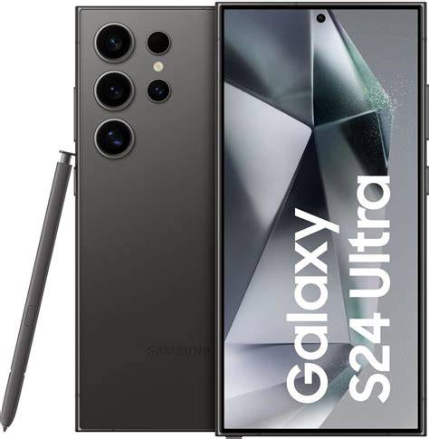

Reseña · Samsung
Galaxy S24 Ultra: el S Pen y la cámara de 200 MP siguen siendo su mejor argumento
Pantalla Dynamic AMOLED de 6.8 pulgadas, Snapdragon 8 Gen 3 y funciones de IA en la cámara y el teclado. Un teléfono pensado para quien trabaja y fotografía con el mismo equipo.
